Najdôležitejšie charakteristické veličiny sú:
- vstupný odpor pre striedavý signál rin
- výstupný odpor pre striedavý signál rout
- napäťové zosilnenie AU
- fázový posun medzi vstupným a výstupným signálom φ
Najdôležitejšie charakteristické veličiny sú:
- vstupný odpor pre striedavý signál 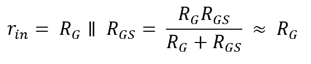
- výstupný odpor pre striedavý signál 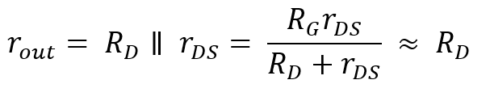
- napäťové zosilnenie 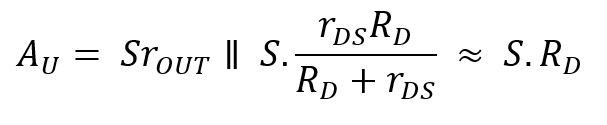
- fázový posun medzi vstupným a výstupným signálom φ = 180°
Vstupný odpor rIN pre striedavý signál je taký odpor, ktorým zosilňovač zaťažuje zdroj signálu. Je tvorený paralelným zapojením RGS a RG.
Výstupný odpor rOUT je odpor, ktorý sa prejavuje ako vnútorný odpor zosilovacieho stupňa pri pripojení záťaže. Je tvorený paralelným zapojením odporov RD a rDS.
Napäťové zosilnenie AU je súčinom strmosti a výstupného odporu pre striedavý signál.
Fázový posun signálu φ Ak je FET budený kladnou polvlnou striedavého signálu, zvýši sa predpätie hradla. Tým sa zväčší prúd drainu, ktorý vyvolá väčší úbytok napätia na odpore v obvode drainu RD. Ten vyvolá zníženie napätia UDS medzi drainom a sourcom. Na výstupe sa objaví záporná polvlna. V zapojení so spoločnou elektródou source je preto fázový posun medzi vstupným a výstupným napätím φ=180°.
Najdôležitejšie charakteristické veličiny sú:
- vstupný odpor pre striedavý signál 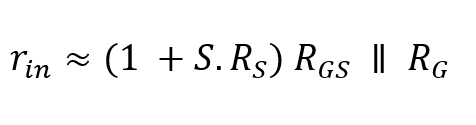
- výstupný odpor pre striedavý signál 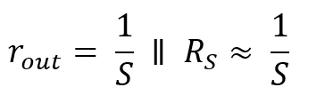
- napäťové zosilnenie 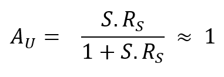
- fázový posun medzi vstupným a výstupným signálom φ = 0°
Vstupný odpor rIN v zapojení so spoločnou elektródou drain sa skladá z RGS, vynásobeného súčinom strmosti a odporu v obvode source, k čomu je paralelne pripojený odpor RG, slúžiaci k nastaveniu potenciálneho hradla.
Výstupný odpor rOUTpre zapojenie so spoločnou elektródou platí uvedený vzťah, kde S je strmosť.
Napäťové zosilnenie AU je v zapojení so spoločnou elektródou vždy menší ako 1.
Fázový posun signálu φ Ak je FET budený kladnou polvlnou striedavého signálu, nezvýši sa len predpätie hradla, ale sa zväčší aj prúd na draine. Tím sa ale zvýši aj úbytok napätia na odpore v obvode source RS. Takže na výstupe sa objaví kladná polvlna. V zapojení so spoločnou elektródou source je fázový posun medzi vstupným a výstupným napätím φ=0°. Pretože v tomto zapojení signál na elektróde source presne sleduje vstupný signál, býva toto zapojenie označované ako sledovač.
Vzťahy:
- súhlasné vstupné napätie UCM
- rozdielové vstupné napätie UDM
- zosilnenie rozdielového napätia AD
- zosilnenie súhlasného napätia ACM
Vzťahy:
- súhlasné vstupné napätie 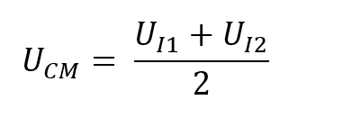
- rozdielové vstupné napätie 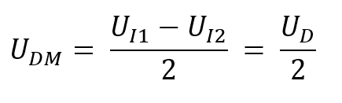
- zosilnenie rozdielového napätia 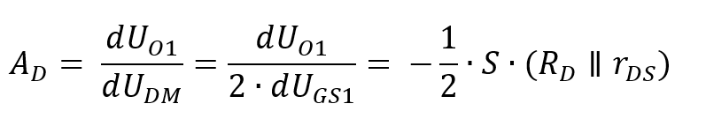
- zosilnenie súhlasného napätia 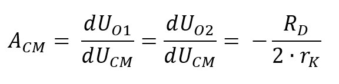
Vzhľadom na rozdielne vlastnosti diferenciálneho zosilňovača pri súhlasom a rozdielovom vstupom napätí, je výhodné rozložiť vstupné napätie UI1 a UI2 na vstupné napätie súhlasného módu resp. súhlasné vstupné napätie UCM (Common Mode) a vstupné napätie rozdielového módu UDM (Differential Mode).
Zosilnenie rozdielového napätia resp. napäťový zisk diferenciálneho zosilňovača AD v diferenciálnom móde bude pre rozdielové zložky vstupných napätí definovaná vzťahom uvedeným.
Zosilnenie súhlasného napätia ACM diferenciálneho zosilňovača je v ideálnom prípade nulové. V skutočnosti závisí od hodnoty vnútorného odporu rK prúdového zdroja IK.
FET s prechodovým hradlom typu BF245 má pracovať pri napájacom napätí UB = 25V v pracovnom bode UDS = 15V, ID = 5mA, -UGS = 1,2V. V tomto pracovnom bode má hodnoty: y21 = 3,5mSa y22 = 25mS. Najvyšší zbytkový prúd je -IGS = 500nA pri Vi = 125°C. Pri -UGS = 20V je -IGSS = 5nA.
Aké charakteristické hodnoty bude mať pri zapojení so spoločnou elektródou source pod obrázku?
 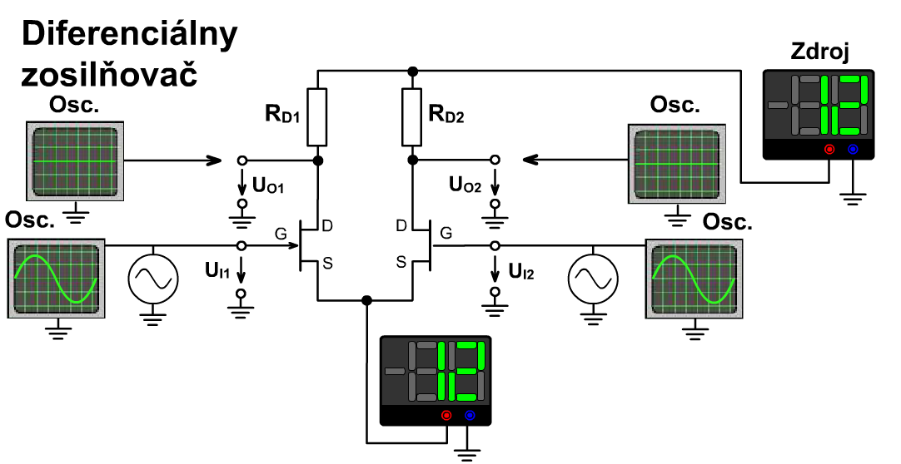
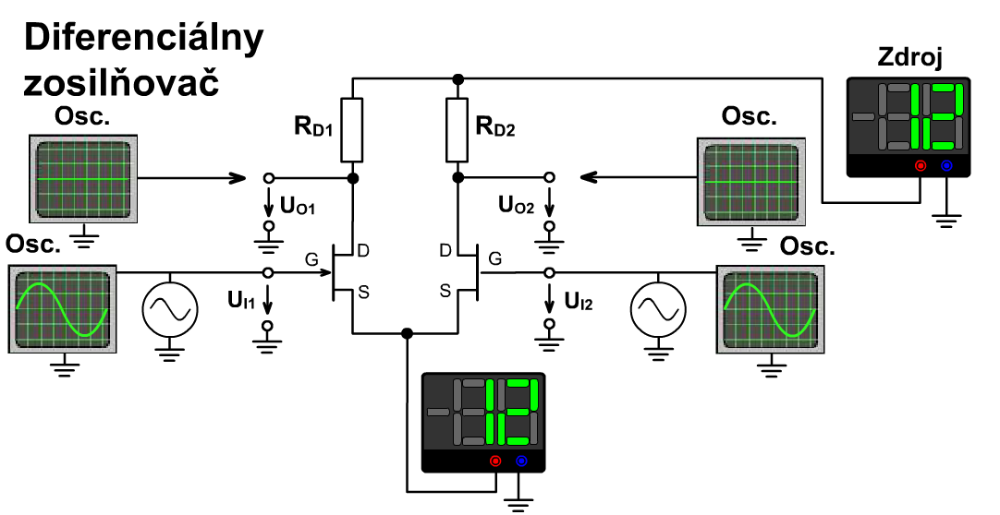